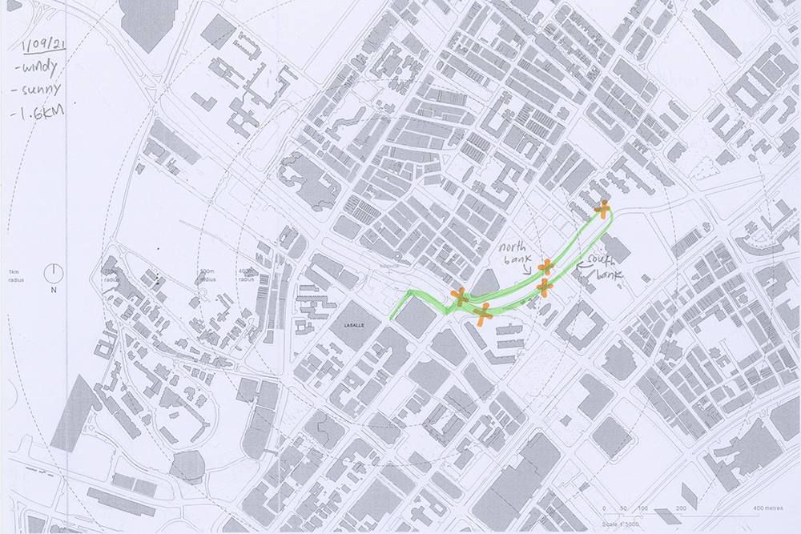
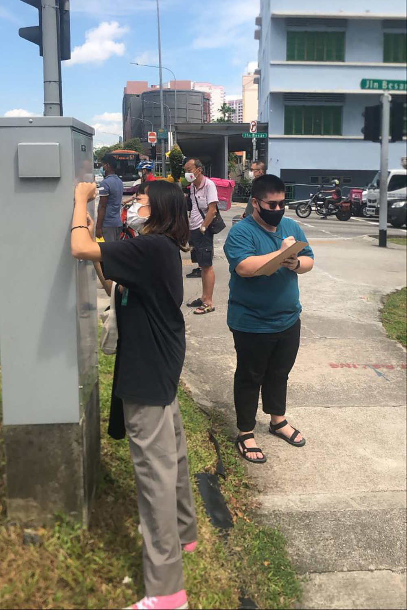
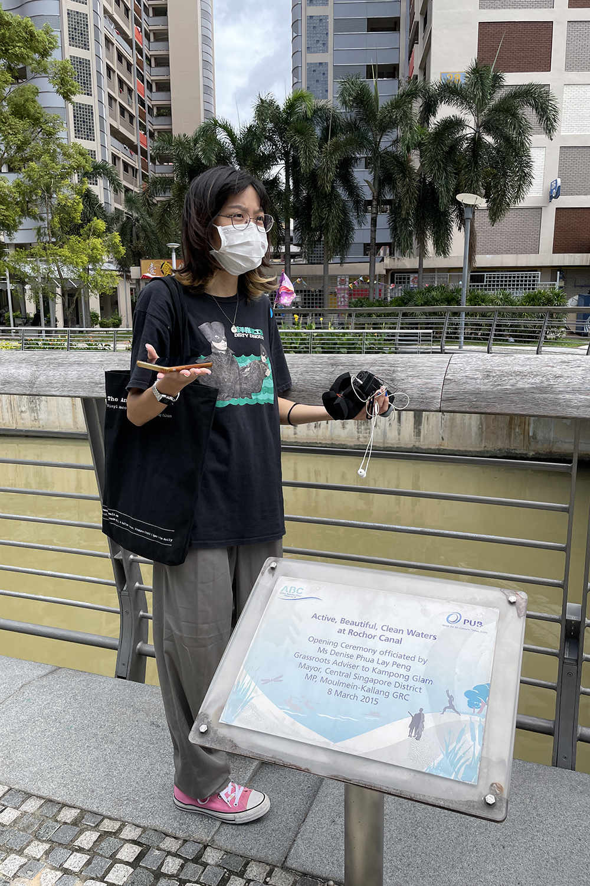
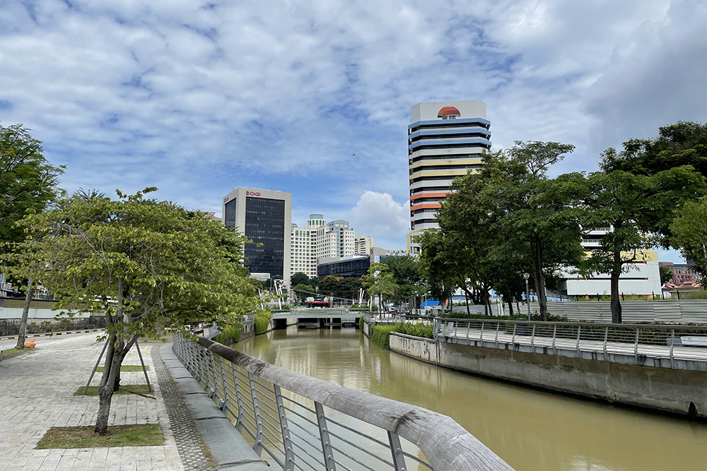
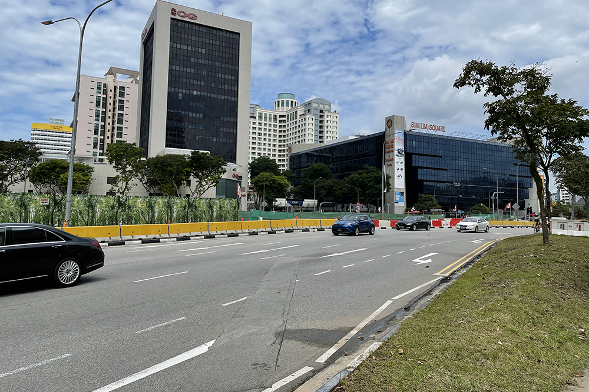
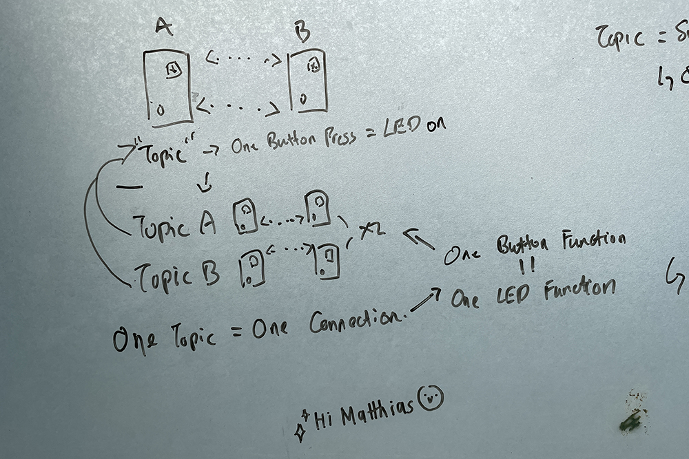
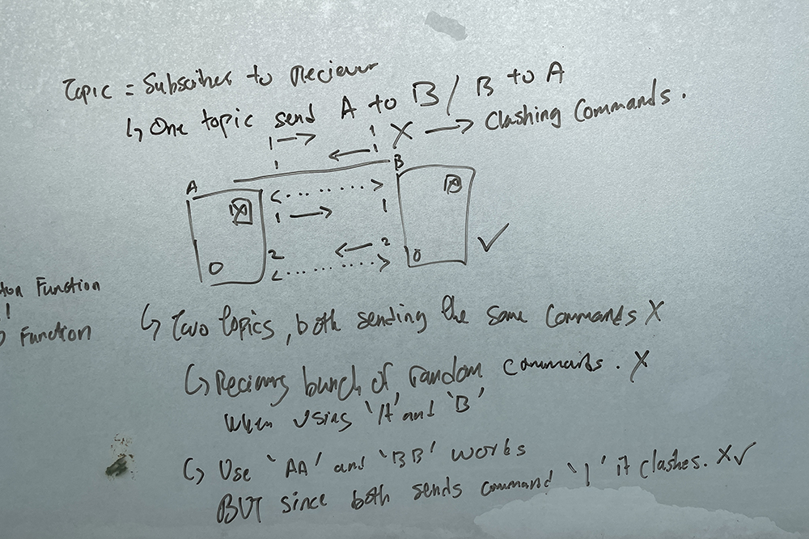
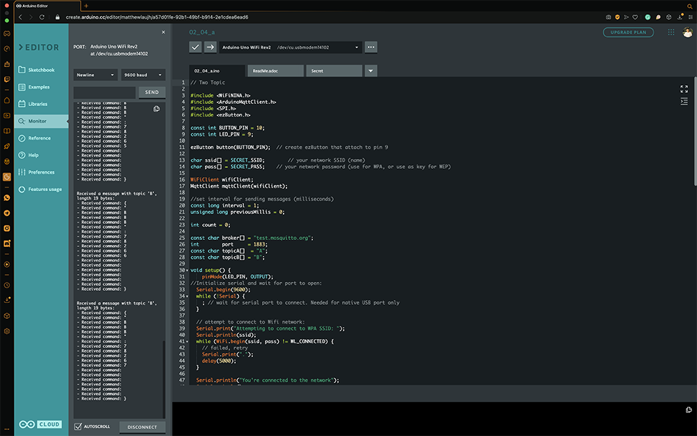

// Semester One Week Three: 30.08.21 - 03.09.21
Dissertation:
// 30.08.21 - Discussion: Research Topic with Johnson Tan.
// 31.08.21 - 03.09.21 - Thoughts: Affective Computing.
Graduation Project:
// 01.09.21 - Workshop: Mapping Townscapes, Phenomena and Interactions.
// 02.09.21 - Arduino Exploration: Two way MQTT Communication to off / on LEDs on both sides.
#S01W03 Appendices:
// #S01W03.A - Discussion: Research Topic with Johnson Tan.
// 30.08.21 - Discussion: Research Topic with Johnson Tan.
Refer to Appendix SO1W03.A for chat transcript.
Was feeling quite stuck with working out my dissertation topic so I had a quick chat with Johnson from last year's batch, Johnson has been one of my closest friends since our Diploma days and has always been a great idea sparring partner and I thought that a good sparring session would help clear my head a little.
My talk with Johnson was a productive one for me, I figured out that parts of my approach were wrong and also that there could be a way to work iterations of my experiments with Arduinos into the dissertation through a practice based method. I also needed to stop focusing on elements of the end product as mentioned by Vikas last week and instead find a suitable context in which these elements could fit into. Just talking through the idea and having someone criticise every aspect of it back to me helped break down the concept into digestible bits and helped me make some progress in aspects of them where I was feeling blocked.
// End of this Section.
// 31.08.21 - 03.09.21 - Thoughts: Affective Computing.
Some wild thoughts I had throughout the week while trying to figure things out. Firstly regarding the topic, after doing some thinking and further researching I chanced upon the term affective communication and affective computing and I thought that summed up my idea of communication moods and emotions pretty well and that will be the term that I would be using from now on to refer to my research. So what about affective communication?
So I found the Affective Computing group at the MIT Media Lab where their researched focused on "Advancing human wellbeing by developing new ways to communicate, understand, and respond to emotion. I thought that resonated pretty nicely with my research topic and this would be a good starting point from here on. The journal IEE TAC would also be a good read as they described Affective Computing as "research on the design of systems that can recognize, interpret, and simulate human emotions and related affective phenomena."
Affective Computing, MIT Media Lab
Our primary motivations are to help people who are not flourishing or at risk of not flourishing. Our projects are diverse: from finding new ways to forecast and prevent depression; to inventing new solutions to help exceptional people who face communication, motivation, and emotion regulation challenges; to enabling robots and computers to respond intelligently to natural human emotional feedback; to enabling people to have better awareness of their own health and wellbeing; to giving people better control and protection over their most sensitive, private, personal data. Some of our work focuses on making contributions to basic theory and science, including new improvements to machine learning algorithms, while other projects focus on advancing research outside the lab, with applications aimed at improving the lives of individuals in their everyday environments.
Diving deeper into Affective Computing, the first thing would be looking at where did the term come about and learning more about the key thinkers and people behind it. The first would be to look into Rosalind Pierce, who heads up the group at MIT and to read about it more in her seminal book Affective Computing, which I would get into further once I manage to get a copy of it. I think in addition to reading up more about Affective Computing it would be good to look into sensory communication as a well as the basis of communication to form a background in communication to the research, as I would like to look further into using aspects of Affective Computing for remote communication through the means of physical computing I think these topics gel together well based on some surface level research into some academic journals and papers.
Some additional thoughts I had on the topic was possible routes where I could take the research, one of them which I think have some potential (pending further research) was ways to communicate stress and burnout. Mainly related to mental health issues along those lines, as recently I've been looking for ways to cope of with stress and burnout, so there might be something there that can be explored. I've also spoken to a few people about this idea of dealing with stress and burnout and it's quite a big topic recently especially coming out of the pandemic where people have been stuck in place for so long, mental health tends to take a pretty big hit.
I think researching on a topic like this and potentially exploring ways to help cope with these issues can in turn help many others down the line too. Especially since a topic like this is not something people like to talk about verbally, maybe having some means of non-verbal communication would help manage these issues better. Especially since Affective Computing is about helping people and improving their quality of life, I strongly think this might be the way to go. Still haven't figured out a target group for this though.
// End of this Section.
// 01.09.21 - Workshop: Mapping Townscapes, Phenomena.
First workshop of our atelier was focused around mapping townscapes, phenomena and interactions. I paired up with Sing Hong and Thomas to map out the area along the Rochor Canal. I thought it was pretty interesting that just based on a short route, there were so many different data points to gather.
Image: Route we took from LASALLE to Rochor Canal and back.
 

Images: Us in action mapping the area.
We had to sketch out the area we were mapping and honestly that was probably one of the hardest things for me as I could not draw. It reminded me a lot of doing perspective drawings in Diploma Foundation and gave me major flashbacks to having my drawings ripped apart (verbally of course) but luckily this wasn't so focused on drawing, and I think I did decent drawings, or at least they did not turn out as bad as I thought they would be.
Image One: My sketches. Image Two: Sing Hong's sketches. Image Three: Thomas's sketches.
Looking at the three different sketches, I think we focused on different things, I tried to catch as much details as possible especially when it came to the buildings, while Sing Hong's kept things quite simple but she drew in moving elements like cars while I focused on the static scene, ignoring moving objects. Thomas's sketches were somewhere in-between ours where he captured a general variety of elements in his sketches. Although we were all looking in different directions while sketching, it's still quite interesting to see that we each had a different approach to the sketches.
 
Images: Reference images of the areas I was sketching.
Another difference between our sketches was that I took down timestamps of when we stopped to sketch and also some smells and sounds that we experienced at the spot, while Sing Hong and Thomas focused on different things. Sing Hong focused on getting some actual sound recordings for her research while Thomas picked up on weather conditions. However together, with a different focus each actually helped formed a more "whole" research into the areas as we each had our own data points that can be put together with each other's.
// End of this Section.
// 02.09.21 - Arduino Experiments: Two way MQTT Communication to off / on LEDs on both sides.
For this week's Arduino Experiment I decided to work on getting the Arduinos to communicate two way, as last week's focus was on one way communication, as a proof of concept and to learn and understand how this works, the logical next step was to figure out how to get it to communicate two way.
As the basis for communication is that it goes back and forth till the flow stops, it's a two way channel until the channel breaks. It would be good to understand the thresholds where communication starts and stops.
Image: Had some trouble visualizing the flow of communication so made an initial sketch to help me figure it out.
Parts List:
2x Arduino Uno WIFI REV2
2x Breadboard
2x Amber LED
2x 220ohm Resistor
2x Push Button
Jumper Wires
For the first try I attempted to create two topics "TopicA" and "TopicB" as two separate channels on different ports to send the same commands over to each other, I also replicated the various functions so each would correspond to a topic but it did not work as the commands clashed with each other (well duh, should have seen it coming). Both devices were sending the same commands to each other which cause the LEDs to light up at the same time.
Image: Back to the drawing board (or well, window in this case.)
This time I listed out some possible scenarios to test and see what works based on my understanding of how the flow of communication should be. Each possible scenario will be accompanied with a test each to see the which hypothesis worked out.
The next experiment has the code simplified back to the primary functions of one way communication and just have both devices programmed with the same code to see what would happen. Nothing happened, surely it wasn't this easy.
Experiment three was the one. In this experiment, I had both devices subscribed to the same topic on the same port, the difference here was that each Arduino was sending out a different command. The first Arduino was sending command "1" to the other Arduino while the other Arduino was sending command "2" to the first Arduino. This way there was no clashing of signals and they could communicate with each other directly.
In the spirit of experimentation, I carried on with the fourth experiment. The fourth experiment had the two topics connected to the same port, however the difference here was that they would follow the precedent set in the third experiment where they would send different commands. Initially this method did not work as it started sending a bunch of random commands (not sure why) but when I changed their topic names to something else "AA", "BB" instead of "A" and "B" it worked. So this method works too, but I think the third way is more efficient and should be the better way to go, moving forward.
Just a simple Arduino experiment this week as most of my time went towards trying to figure out my Research Topic and working on the objectives and questions. But I think the "methodology" I applied to experimenting with the Arduino was quite good. Working out a few logical scenarios and testing them to see what works instead of straight away relying on looking up tutorials and seeking help. I think I might carry forward this method of testing into my future experiments as it really helps and (forces) me to really think about what's possible and what are the possible ways of doing things before even working on it physically.
// End of the Week.
// S01W03.A - Discussion: Research Topic with Johnson Tan.
Matthew Lau
While in the stage of writing your RPO and early stages of Appendix, how did you look at defining a user group for the research objective? (Shared with him some feedback I received from the last consultation.)
Johnson Tan
For my RPO I had managed to define a scope of research, simply exploring decay as a material treatment, where I am challenging designers to see materials differently. There is a method : Decay as a process. There is a problem : Dominant notion of material treatment (Industrialisation)
Matthew Lau
Would that be considered a practice-based dissertation method?
Johnson Tan
Yes, I mentioned to Yasser that I wanna explore and challenge the methods. Then Yasser say that it could be practice based led.
Matthew Lau
I think a rough summary of the idea that I have so far is Method: Physical Computing as form of Interaction Design. Problem: Dominant shift toward screens in today's climate.
Johnson Tan
Your method and problem, personally I feel there is potential to be better, now it's lacking the wow factor. You need to bring a wow factor to the supervisor, interesting enough yet do-able. For me, Like Decay, was done by MIT, so I got a backing for my research and it's not just a random idea. Practice based is the idea of reflection in action. See is there any methodology that interest you and Singapore could do/ lacking, Then challenge that method and geek out. Take an interesting concept/method from MIT/somewhere, challenge it and make it your own. The umbrella is the concept/method of material ecology for me, I took one case study = decay by design Aguahoja the I put it into Singapore's context. Now you are introducing him to a method(physical computing-interactive) and a outcome/goal (play). Its like me saying I wanna do decay(method) to fertilise (outcome), but the RPO is proposing what you wanna research and on who.
Matthew Lau
Interaction design is the concept, physical computing is the method. Does that make sense?
Johnson Tan
Okay now you got physical computing, put play aside, Don't be too focus on interactive first, because physical computing has it potential to bring you to places, by adding interactive in now might hinder its potential, Vikas gave the idea of introducing physical computing into daily objects and connecting them to each other is a route.
Matthew Lau
For me, I think everything boils down to these being a form of non-verbal communication. So using the concepts of (interaction design) through the method (physical computing) for non-verbal communication.
Johnson Tan
If its non verbal communication makes it more interesting ahahaha, Its like muted interactive, Just sight touch smell and interaction. If you remove one sense it changes the whole interactive design ball game.
Matthew Lau
Non-verbal doesn't just mean that its no sound, its more of referring to communication not through words.
Johnson Tan
Can can, then you have to define what is non verbal communication. no need speech or simply no sound? Just lights? Does it undermines or create a new experience? What is is your research challenging?
Matthew Lau
I am challenging the dominant shift to screen based interaction in today's society, especially in the current climate, everything is shifting towards screen-based interactions.
Johnson Tan
Why is there a need to challenge that?
Matthew Lau
This is part of my literature review last semester "Advances in media have led to a technological and cultural transition in the field of telecommunications, with more mediums becoming viable for exploration in the form of experimental means of communication. As affordances through networked technologies have redefined how people perceive each other and shaped the way people interact daily, it has led to the proliferation of screens in today’s world, reducing tactility in interaction and the ability to communicate sensorial and emotional beats, bringing about the need for a material-centered approach to interaction design."
Johnson Tan
That's interesting, material centered approach to interaction design. Its simple and nice but it needs to be developed further. Do you have any case study to this?
Matthew Lau
It's on my
research compendium website. Look at Yo-Yo Machines and Here and There.
Method: Exploration of Interaction Design concepts in the form of Physical Computing for Non-Verbal
Communication through a material centered approach to interaction design.
Problem - As affordances through networked technologies have redefined how people perceive each other
and shaped the way people interact daily, it has led to the proliferation of screens in today’s world,
reducing tactility in interaction and the ability to communicate sensorial and emotional beats.
Matthew Lau
That sounds like useless machines.
Johnson Tan
Jodi's is also technically useless machines. But it inspires coding students, But to accountants or office workers its useless lol That will determine what is the message you are trying to bring across. What if the lecturer's ask: Why non verbal? - muted? Why material centered approach? -what specific kind of material and why?
Matthew Lau
So screen based interactions mainly focus on video, speech and text, verbal forms of communication. So challenging that notion of verbal communication, with non-verbal communication. Why material approach? Due to the nature of screen based interaction, it lacks tactility in interaction. Hence the need for material approach. So what material? Referring to my literature review from last semester "As mentioned by Wiberg (82) “"Interactions" means actions in between two or more entities; the entities can be a user and a computer, but they could also be any other sets of entities.” A material-centred approach to interaction design looks at designing across many substrates and how contemporary interaction design is about getting various materials to work in unison. Through the materiality of interaction, digital artefacts can manifest many different forms of interaction. "If we think of this process as a postrepresentational paradigm of interaction design, the implication is that computing is no longer only about representing reality (as it follows from the representation-driven paradigm), but it is actually part of reality (and in that sense "postrepresentational") (Wiberg 84) ."".
Johnson Tan
That's good, Love it when it says digital is like representation while computing is part of reality, Love it.
Matthew Lau
Yeah so like digital screens are merely representational but through physical computing we can attain a sense of reality in interaction. Maybe I can use one of these statement as like an anchor point, like the Neri Oxman statement that you used to anchor yours?
Johnson Tan
Neri Oxman statement was materials should be ever-changing, adaptable and living amongst the environment. So she creates new materiality by exploring that notion. Using decay. At least this is what my project leverages on. For that statement that you mentioned, it's just like a comment, not really a method. It's more like the spark to your problem.
Matthew Lau
I also really like this statement "A material-centered approach to interaction design cannot only be about digital materials. On the contrary, Contemporary interaction design is about the configuration of multiple materials to work in concert. Interaction design thus becomes a practice of designing across a multitude of substrates.(Wiberg 82)".
Johnson Tan
It’s like introducing materials and computation to orchestra an experience. What if you take a step back, It might help you to step away from outcome driven/ unconsciously driving your project into finding ways that you could explore/experiment. Because you would be thinking about what to do/ what to explore / how to make it more interesting / challenging. Then your project statement would naturally be outcome driven. Cause your statement right now, sounds very outcome driven.
Matthew Lau
Yeah that's true, it sounds like it's describing what i want to work towards making.
Johnson Tan
Okay start from asking yourself what spark you from choosing computation?
Matthew Lau
I was instantly hooked, when Andreas introduced the Yo-Yo Machines project to me, its such simple artefacts, and like the effect/interaction is so minor but it manages to communicate this notion of telepresence, simultaneous actions, shared experience and remote presence, challenging the subtleties of long-distance communication and changing how people interact and communicate. Just by letting people send one another nonverbal, expressive signals like lights, sounds or simple mechanical movements.
Johnson Tan
Okay now, how can you make this project yours? In your own personal life or Singapore context. The second part is outcome, avoid that for now. These words are interesting "Simple artefacts, effects minor, somehow communicate sense of ...". It's sort of like my decay. So how to make it your own? Changing how people interact and communicate?
Matthew Lau
Basically the two main case studies, Yo-Yo Machines and Here and There both somewhat achieves this idea. They mention that "The global pandemic has forever changed how we work, learn and play, making virtual communication the primary form of human interaction."
Johnson Tan
So Covid-19-19 restrict physical interaction?
Matthew Lau
Yes, but i've been reluctant to use Covid-19-19 as a premise, even though yes it's part of the background, and like, without a doubt it's a driving force for the change in these screen based interaction norms. So I feel like it could be a primer statement but it should not be the focus of the background. As I feel that yes, due to Covid-19, it has led to this shift towards screen and it has changed social norms and that is here to say, but all this is possible due to affordances that have allowed this change to happen. I just feel like Covid-19 is a very "lazy" problem to reuse at this point, especially one/two years into this pandemic, its been done time and time again especially in my case studies. So it's more about looking at the lasting effects that have come into existence due to the pandemic.
Johnson Tan
Ahhhh but you know it’s undeniable that Covid-19 is the trend setter lol ahahahahaha. I remember Stanley once said to my project. A unfortunate event could be an opportunity as well. To rethink our way of living. In my project case is anthropogenic the age of humans makes us rethink the use of materials. Covid-19 is a new era, rethink about? No need for office. More interaction between families? More divorce? Less interact with friends but more with family? True that it shouldn’t be the focus of your problem. Actually the supervisors said before your project don’t have to be problems. It could be opportunities. Most people’s projects are problems first. Too many Screen based is like a problem.
Matthew Lau
Yeah Vikas mentioned that something interesting about this project could be looking at the hint of possibility and that ties into this thing I love about one of my case studies, NYU ITP, cause they call themselves the center of the recently possible.
Johnson Tan
The way your approach your project changes everything. Problem/opportunity. Mine is more towards opportunity.
Matthew Lau
That's one way to think of things, opportunity wise, I think there's great opportunity in how accessible these physical computing parts have become, and how easier it is to find help online, basically the idea of open-source. So like it could be because of this access and like the shift towards screens that is like an opportunity to solve a problem?
Johnson Tan
I mean it’s not wrong, but not in-depth enough though. Cause it’s like two different things trying to mash together.
// End of the Appendix.